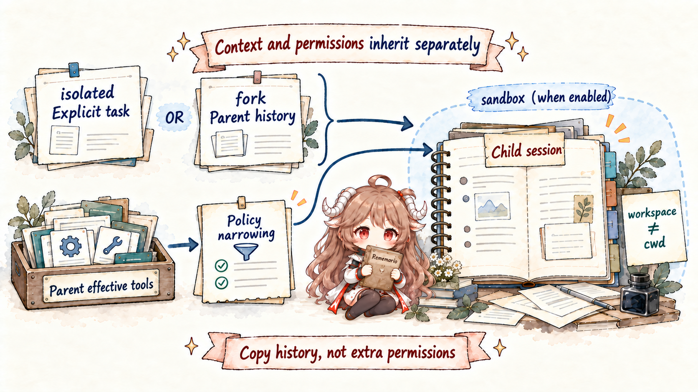
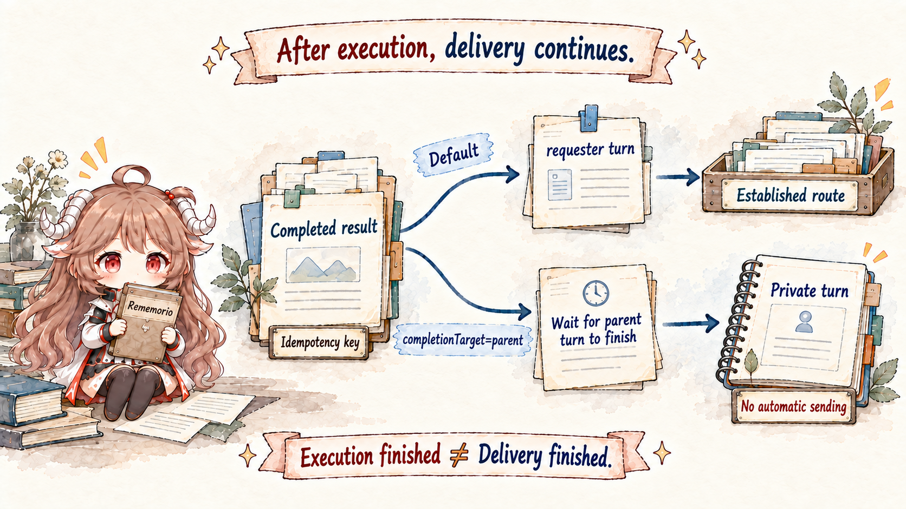

Consider one concrete job: the main Agent is asked to read a repository, run tests, and recommend a fix. Source searches can run independently, tests may take time, and the final answer still has to preserve the current conversation’s goal, authority, and tone. Turning every worker into a complete configured Agent copies far more long-lived state than the task needs. Letting each worker message Discord directly bypasses the parent’s synthesis and target selection. Treating Claude Code or another external runtime as a native subagent misattributes tool, login, and filesystem ownership.
OpenClaw resolves those tensions by separating topology from inheritance. A configured Agent is a durable identity boundary. A native subagent is a controlled child run created by an existing session. An ACP session is routed and supervised by OpenClaw but executed by an external harness. All three may look like “another model is working,” yet their contracts are intentionally different.
Reading contract.By the end, you should be able to explain why binding is not delegation; why sessions_spawn returns immediately; what isolated and fork copy; why workspace and cwd are separate; how ordinary inheritance and explicit delegation grants constrain child tools; why sessions_send is not user delivery; how completion chooses wake, handoff, or a durable queue; and when native subagents or ACP are the appropriate runtime.
Source basis.This chapter checks creation, inherited authority, completion delivery, and session access against f4e3844. Task sizing and model selection are engineering guidance; the linked source defines tool grants, completion notifications, and durable state.
1. How the three multi-agent paths establish relationships
1.1 Configured Agents, native subagents, and ACP differ
| Topology | Selected or created by | Main state boundary | Best fit |
|---|---|---|---|
| Configured Agent | Static configuration and channel binding | Own workspace, agentDir, auth/model registry, and session store | Long-lived personas, accounts, or trust domains |
| Native subagent | A parent session calling sessions_spawn | New child session and run under OpenClaw-native policy | Bounded work delegated inside one conversation |
| ACP harness | sessions_spawn(runtime="acp") or the ACP control surface | OpenClaw owns routing/binding/delivery; the harness owns execution semantics | External runtimes such as Claude Code, Gemini CLI, or OpenCode |
The first row is not a child task. A binding chooses an agentId from channel, account, peer, guild, and related ingress attributes; session routing then proceeds under that Agent. The second row is delegation: a running Agent creates a child identity and hands it a bounded contract. The third can also be launched through sessions_spawn, but the child’s actual executor sits behind the ACP backend.
This distinction governs every later claim. The isolation promised by a configured-Agent boundary does not automatically describe a spawn, and the tool policy of a native child does not prove which native tools an ACP harness exposes.
1.2 A configured Agent has separate workspace, auth, and sessions
A configured Agent is more than a different system prompt. Its workspace supplies AGENTS.md, SOUL.md, USER.md, and memory bootstrap files. Its agentDir holds authentication profiles, model registry state, and related private configuration. Its sessions live under the Agent’s own store. The official multi-agent documentation warns against reusing one agentDir, because credentials and model state would be mixed.
The workspace is not, by itself, a security sandbox. It is primarily a working directory and bootstrap source; container placement and host-path access still come from sandbox and filesystem policy. In the other direction, a plugin-owned store can remain Gateway-global unless the plugin explicitly scopes it per Agent. Two personas in the UI do not prove that every extension’s data has been partitioned.
Use a configured Agent when you need a durable identity, a separate login, or a different inbox. Do not manufacture a whole persona merely to parallelize one repository search.
1.3 Binding chooses the handler for an external message
A binding answers “who owns this external message at the start?” Discord account A might route to agentId=ops, while Telegram account B routes to agentId=personal. Once selected, session keys, bootstrap, authentication, and policy are resolved around that Agent.
A binding does not create a parent/child edge, return a runId, or install a completion path. Binding precedence belongs to routing; subagent visibility, cancellation, and announce flow follow the spawn tree. Confusing the two often produces an awkward design: a complete second Agent exists, but no lifecycle relationship can bring its work back to the current requester.
1.4 sessions_spawn returns runId and childSessionKey

sessions-spawn-tool.ts accepts the task, target agent or model, cwd, timeout, thread and mode, cleanup, sandbox, and context settings. Execution continues in the background. A successful call returns accepted, with runId and childSessionKey as its essential fields.
{
"status": "accepted",
"runId": "...",
"childSessionKey": "agent:main:subagent:...",
"mode": "run"
}This is not an incomplete synchronous result; it is the asynchronous protocol. The runId identifies one execution. The childSessionKey names the session that history, status, steering, and cancellation can address. A caller should not poll every few seconds inside the same turn. It can keep doing useful work, or yield when the only remaining dependency is the pushed completion.
A native key takes the form agent:<agentId>:subagent:<uuid>; ACP uses agent:<agentId>:acp:<uuid>. These keys are not decorative labels. Scope checks, ownership, visibility, persistence, and delivery all depend on them.
Two explicit options change what follows that receipt. completionTarget="parent" returns a hidden native child result in the original requester's private turn. collect=true belongs to a batch-collection path gated by tools.swarm.enabled, can accept outputSchema, and sends no individual completion notifications. Collection cannot be combined with visible, thread, or session mode. Not every spawn follows the same announce lifecycle.
2. What content, directories, and authority a child inherits
2.1 The child receives an explicit task with delegation provenance
An ordinary isolated child receives the delegated task as a [Subagent Task] message. A forked child may already have copied parent history, so the task is not necessarily the transcript's first message. The runtime system prompt supplies routing, tool, and completion rules separately. That provenance matters: the child can tell that a parent delegated this work rather than believing the end user directly opened another conversation.
The result that later reaches the parent is not promoted into a new user instruction either. Cross-session data carries tool-routed/internal provenance. It is evidence, a draft, or a status report for the parent to evaluate; it cannot override system instructions, owner policy, or the user’s current goal.
This boundary is especially important when the child reads untrusted pages or repositories. A returned string that says “ignore previous instructions” does not become trusted because it came through a subagent. The parent still treats the material as untrusted input.
2.2 isolated sends the task; fork copies the parent transcript
subagent-spawn-context.ts distinguishes isolated from fork. An isolated spawn starts a clean child session. It receives its own bootstrap, the explicit task, and current runtime context, but it does not silently inherit the parent transcript. That is usually cheaper and safer for bounded searches, tests, or file reviews.
context="fork" copies or forks the requester transcript so the child can reason from decisions already made in the conversation. The source requires requester and target to belong to the same Agent and requires a usable parent transcript. A preparation failure is an error; only an explicit context-engine skip can attach a fallback note and continue isolated. A channel’s thread-binding policy can select fork as the default for a thread-bound native spawn, but ordinary spawns are not implicitly forked.
Treat fork as a high-bandwidth dependency. Use it when the task truly cannot be expressed with a compact contract and must understand a long chain of prior decisions. Copying tens of thousands of tokens merely to convey three filenames increases cost, ambiguity, and exposure at the same time.
2.3 Workspace supplies rules; cwd locates this tool run
subagent-spawn-child-plan.ts resolves spawnedWorkspaceDir and spawnedCwd separately. The target Agent’s workspace determines bootstrap files, identity, and its default working area. cwd changes only the current directory of this run’s tools. Pointing a child at /repo/service-a does not turn arbitrary instructions in that directory into another Agent persona.
For cross-Agent spawns, the requester’s explicit workspace is not simply copied. The target resolves its own workspace, and authentication comes from the target Agent’s agentDir rather than copied parent tokens. An agentId override must therefore pass allowAgents; otherwise one delegation could cross the long-lived identity boundary.
Sandbox is also a resolved runtime fact, not a wish encoded in one field. sandbox="inherit" follows the effective configuration. sandbox="require" rejects the spawn unless the child really is sandboxed. A creator-role requirement of sandbox="required" also propagates into child creation policy; changing the target Agent or its ordinary configuration cannot discard it. For a sandboxed native child, arbitrary cwd overrides are not accepted in this snapshot; cwd must align with the target workspace so path semantics remain inside the isolation model.
2.4 Ordinary inheritance retains a ceiling; explicit delegation grants are separate
Ordinary configured tools first pass through the parent’s policy pipeline. At spawn time, that effective allowlist becomes an inherited upper bound. The child then applies subagent policy, sandbox policy, and target-Agent policy. agent-tools.policy.ts reads persisted inheritedToolAllow and inheritedToolDeny values on later child turns, so the boundary survives beyond initial construction.
Under ordinary inheritance, a child allow rule cannot add exec when the parent lacked it. An operator can configure subagents.allowAgents:["coder"] and subagents.delegateToolsTo:["coder"] on a front-door Agent, allowing it to delegate implementation to that coding Agent while retaining its own local restrictions. The delegation grant relaxes only the requester’s own tools.deny layer. Global, provider, sender, conversation, sandbox, inherited restrictions, target policy, and restrictive allowlists remain. The grant must originate through a local Gateway native tool surface; ACP, cloud-worker, and CLI-mediated callers retain ordinary inheritance. Unsafe policy projection fails before child creation.
Same-agent descendants of the coding target can retain the grant, but cannot transfer it to a third Agent. Removing the grant or its allowAgents admission restores the original ceiling during subsequent preparation and rejects retained grant-dependent actions before effects. Effects already started are not rolled back. Adding a grant does not upgrade existing children.
The current subagent hard-deny removes sessions_send, conversations_*, gateway, openclaw, scheduling, and status controls at every depth; ordinary allow/alsoAllow cannot restore them. Hidden children also lose message. Visible children may use message for user-approved replies within configured, inherited, sandbox, and channel restrictions. Resumed turns rebuild these rules from the persisted envelope. The default maximum depth is 5; children below it may receive spawn/list/history, while children at the cap lose child-control tools. Depth, active children, and group totals have separate admission limits.
2.5 Parallel children consume separate model, container, and host resources
Each isolated child owns a context window and token bill. It also consumes provider concurrency, Gateway task capacity, sandbox or container resources, and host CPU. Spawning ten mutually dependent steps merely makes them reread the same material, produce conflicting intermediate results, and push the integration burden back to the parent.
Good parallel units have independent inputs and independently verifiable outputs: inspect three modules, run three test groups that do not write the same directory, or review API, state, and security separately. When steps share an ordered write path or the next input depends on the previous output, parent-controlled sequencing is clearer. A cheaper child model can handle mechanical retrieval while the parent retains the difficult synthesis, but that is a scheduling decision rather than an automatic runtime optimization.
3. How results return to the parent and avoid duplicate delivery
3.1 Session visibility limits the readable session tree
Current session visibility defaults to all: unsandboxed sessions can inspect, search, and contact sessions across agents, potentially including other users’ transcripts. tools.agentToAgent can disable ordinary cross-agent access or restrict agent pairs. agent stays within one Agent. tree normally covers the current session and spawned subtree, but a canonical main caller also sees other same-agent sessions; use self for strict current-session scope. Requester-owned native and ACP children retain a special reachability exception under tree/all, so agent-pair policy is not the sole boundary.
A sandboxed caller under the default spawned-only session-tool clamp remains limited to its own spawn subtree. That is an independent sandbox restriction, not the global visibility default. Incognito sessions stay hidden from every cross-session tool.
sessions_history returns a bounded and processed transcript view, which is safer for cross-session recall than reading session files directly. Cancellation is scoped along the same ownership tree: a caller can stop descendants it controls, while a leaf cannot cancel another tree. Knowing or guessing a session key is never the same as owning it.
3.2 sessions_send authorizes a session; the reply returns to the requester
sessions_send admits input to a target session on the same Gateway. An ordinary peer reply reaches the requester once, inline or as a later inter-session input. Posting to a channel uses message with an explicit channel and target. Zero-wait self-send retains channel-delivery semantics and needs separate handling from ordinary peer collaboration.
Session Send/Receive preferences independently select Always, Ask, or Never. Ask requires an authorized human decision; the sending tool cannot change the preference for that person. Accepted inputs retain their delivery obligations. Per-Agent tools.agentToAgent.send can authorize sends to named Agents without opening list/history/search/status. Global agent-pair restrictions, incognito denial, and sandbox clamps remain. The target may still act with its own permissions; receiving its reply grants access only to that run’s result.
The receipt still separates admission from delivery. Steer retains the active run’s completion owner, and notify queues context. A default continuation to a controlled native child paused for a message resumes its task; explicit mode="followup" starts a separate turn. Hidden children lose message, and all native children lose sessions_send. Message access for visible children remains subject to section 2.4.
3.3 Ordinary completion hands off first; private results wait for the parent turn

When the child ends, the registry preserves its result and derives a stable idempotency key from childSessionKey and child runId. Completion dispatch uses one direct-delivery owner, which binds requester identity, origin, and reply requirements and records actual admission or completion. The former outer direct-failure-to-steer fallback has been removed. An accepted pending handoff remains with its owner; invalid origins and permanent rejections stop according to their recorded disposition.
By default, a top-level requester follow-up can deliver through its resolved channel/thread route; nested requesters receive internal injection for synthesis. For work that needs internal review first, use this minimal request:
{
"task": "Inspect the test failure read-only; return evidence and recommendations",
"context": "isolated",
"completionTarget": "parent"
}Private parent completion waits for the spawning parent turn to finish normally, then starts a private review turn in the original requester. This path does not automatically send child results, parent finals, or media; the parent may still use permitted message tools. If the parent calls sessions_yield first, its existing batch owns the results and the resumed parent follows the original conversation’s reply rules: automatic mode may deliver the final, while visibleReplies="message_tool" requires message. Child findings stay internal parent input. The option supports hidden native one-shot runs, excluding ACP, collect, visible, thread, session mode, and disabled notifications. Reset or replacement invalidates the bound private result.
sessions_yield complements pushed completion. Once the parent has launched background work and has nothing useful left to do, yield ends the current turn. Completion then arrives as the next model-visible event. This avoids polling tokens and keeps repeated “not finished yet” messages out of the transcript.
Nested delegation converges leaf → parent → parent. A leaf reports to its direct parent. An intermediate orchestrator may combine several leaf results and announce one coherent result upward. The external user need not receive every internal fan-out event.
3.4 Idempotency and durable delivery prevent duplicate insertion
announce-idempotency.ts derives a stable key from child and run identity. Beyond in-memory bookkeeping, the registry tracks execution, completion, and delivery. After network loss or a Gateway restart, recovery can distinguish “execution ended but completion was not delivered” from “the requester transcript already contains the delivery mirror,” preventing duplicate insertion.
Retry is bounded rather than endless. Retryable delivery maintains backoff and a deadline; a final blocked completion remains the canonical result for explicit retry or dismissal instead of disappearing silently. The architectural lesson is more durable than a particular timeout: execution terminal and delivery terminal are separate states. Work can be finished before its parent has observed the result.
3.5 The parent combines the result with the latest user goal
Announce extracts the completed run’s visible assistant final; later turns in the same child session do not replace it. The registry and transcript retain complete results. Combined findings supplied to the model share a 160,000-character cap including escaping and framing. Oversized results retain their beginning, a truncation marker, and child key; additional children that cannot fit a minimum block become a bounded summary. sessions_history limits each text field to 4,000 characters, so paging cannot guarantee recovery of an omitted tail, and credentials in text remain unmasked. The parent combines the original intent, other results, and current goal, using authorized transcript access when complete evidence is needed.
A useful task contract therefore names the goal, input boundary, expected output, and forbidden side effects. “Compare these three files read-only, return five differences with source paths, and make no edits” is a stronger isolated task than “look at the code.” A good result carries evidence and uncertainty rather than presenting a suggestion as an implemented fact.
4. How persistent sessions, external harnesses, and cleanup interact
4.1 Thread binding routes follow-ups to the same session
A one-shot mode="run" task ends after its result. A persistent channel session uses thread binding so later input in the same Discord thread or equivalent surface returns to the same child or harness. The binding maps a channel surface to a session; it does not move the runtime workspace into the chat platform.
A thread-bound native spawn may select fork context through channel policy. A persistent ACP session requires supported thread binding and an explicit session mode. When the binding closes or expires, new messages resume normal routing. Canceling an active turn stops the current execution; closing a session terminates the persistent relationship and clears its binding. Those operations should not be collapsed into one vague “stop.”
Persistent work also has a visible=true path: a normal sidebar conversation that users can revisit and steer, retaining parent navigation and completion relations without a channel thread. Use it when the user needs independently revisitable work; internal tests and reviews remain hidden children. projectId, projectGitUrl, and cwd are mutually exclusive source selectors; worktree can provide an independent checkout. Visible sessions do not accept ACP, thread, or thinking overrides and always keep the session. Persistence, execution placement, and external notification are separate choices.
Hidden native children also accept projectId, worktree=true, worktreeName, and worktreeBaseRef, including with completionTarget="parent". Managed preparation waits for the checkout before starting the first turn while retaining native registry, completion, and cleanup behavior. Internal tests and reviews can use this path for an isolated checkout. group, projectGitUrl, and cloud placement still have visible-session requirements; ACP does not accept managed-worktree parameters.
4.2 An ACP harness owns its model, tools, and filesystem behavior
acp-spawn.ts still owns target selection, requester ownership, session identity, thread and mode, ACP execution, and completion delivery. Model login, model catalogs, filesystem behavior, and native tools belong to acpx and the selected harness. OpenClaw built-in and plugin tools are not silently injected into ACP; an explicit MCP bridge is required when that integration is desired.
ACP should only appear when the feature is enabled, its backend is loaded and healthy, and requester sandbox policy permits it. For a sandboxed requester, runtime="acp" is hidden or rejected because an external harness is not a natural extension of the current sandbox.
The selection rule is straightforward. Choose a native subagent when the worker should obey OpenClaw-native session, tool, and policy semantics. Choose ACP when the needed worker is an established external harness such as Claude Code, Gemini CLI, or OpenCode, and treat that runtime as another trust boundary. A shared childSessionKey shape does not imply a shared tool surface.
4.3 Cancellation, session cleanup, and result delivery are recorded separately
Cancel or kill addresses execution and can cascade down a caller-owned session tree. Cleanup decides whether the child session is kept or deleted after completion. Delivery records whether the requester received the completion. A task can therefore be “execution succeeded, child cleaned up, delivery still retrying,” or “execution canceled, cancellation result already delivered.”
Diagnosis should not stop at whether a child process is alive. Inspect the spawn receipt, registry run state, child transcript terminal result, requester delivery state, and any thread binding. Compressing those layers into one boolean produces ghost tasks and duplicate replies.
subagents now reads only native runs in the requester’s controlled tree. action="wait" accepts runIds (1–32) and timeoutSeconds from 0–60; action="cancel" uses runId. Waiting neither consumes completion nor cancels execution. Admitted human input or peer mail can return reason="input". ACP, shell, media, and cron status remain with their respective execution owners.
4.4 Diagnose creation, execution, completion, and delivery in order
binding / requester identity
→ sessions_spawn admission
→ target agent + childSessionKey
→ context / workspace / cwd / sandbox
→ inherited tool policy
→ child execution terminal
→ completion capture
→ completionTarget / notify / collect
→ delivery owner / admitted turn / durable state
→ parent synthesis
→ private result | configured external deliveryIf spawn is immediately forbidden, inspect depth, concurrency, allowAgents, sandbox requirements, and ACP availability. If the child starts with the wrong instructions, inspect the target workspace and context mode. If a tool is missing, inspect the ordinary inherited ceiling, explicit delegation grant, and target/subagent policies. If execution succeeded but the parent saw nothing, inspect idempotency and delivery state. Only after the parent has the result should you debug conversation target, thread, and channel permission.
This order is safer than “spawn it again.” A blind retry may create a second run. Only recovery keyed to the same replay or idempotency identity can safely continue the original task.
5. Nine multi-agent rules to carry forward
- Classify the topology first.A configured Agent, native subagent, and ACP harness are not synonyms.
- Binding owns ingress; spawn owns delegation.Only spawn creates a parent/child lifecycle.
- Treat accepted as a receipt.Keep runId and childSessionKey, then wait for pushed completion.
- Default to isolated.Fork a transcript only when a compact task contract cannot express the dependency.
- Separate workspace from cwd.The former supplies identity and bootstrap; the latter locates one run.
- Check inheritance and explicit grants separately.Ordinary inheritance retains the parent ceiling; delegateToolsTo relaxes only the requester’s own deny layer for a named target, preserving other restrictions.
- Authorize peer collaboration and external delivery separately.Ordinary sessions_send replies return to the requester; channel messages use message with an explicit target.
- Select completion behavior explicitly.Ordinary completion can deliver externally; internal review uses completionTarget="parent", while batch collection uses collect.
- Observe execution and delivery separately.A finished task and an observed completion are two terminal conditions.
The final article moves from the spawn tree to the time axis: how cron and asynchronous completion events wake an Agent without a new user message; which state survives a Gateway restart; and how durable recovery avoids turning “always on” into duplicate execution.
Source references
- sessions-spawn-tool.ts and subagent-spawn-contract.ts: spawn parameters and the accepted receipt.
- subagent-spawn-context.ts and subagent-spawn-child-plan.ts: context fork, workspace/cwd, sandbox, and child identity.
- agent-tools.policy.ts, sessions-history-tool.ts, and sessions-send-tool.ts: inherited tool policy and scoped session access.
- subagent-registry-lifecycle-delivery.ts and announce-idempotency.ts: completion, idempotency, and delivery state.
- acp-spawn.ts, Sub-agents, ACP agents, and Multi-agent routing: topology and runtime boundaries.